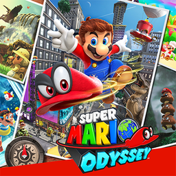
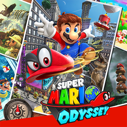

Red Dead Redemption II
Estados Unidos, El final de la era del Salvaje Oeste ha comenzado y las fuerzas de la ley dan caza a las últimas bandas de forajidos. Los que no se rinden o sucumben, son asesinados. Tras un asalto fallido en el pueblo de Blackwater, Arthur Morgan y la pandilla de Van der Linde se ven forzados a huir. Con agentes federales y los mejores cazarrecompensas pisando sus talones, la pandilla deberá asaltar, robar y hacerse camino a través de una América despiadada para poder sobrevivir. Mientras crecen las divisiones que amenazan con el fin de la pandilla Arthur debe decidir entre sus propios ideales y su lealtad a la pandilla que lo crió.


 
